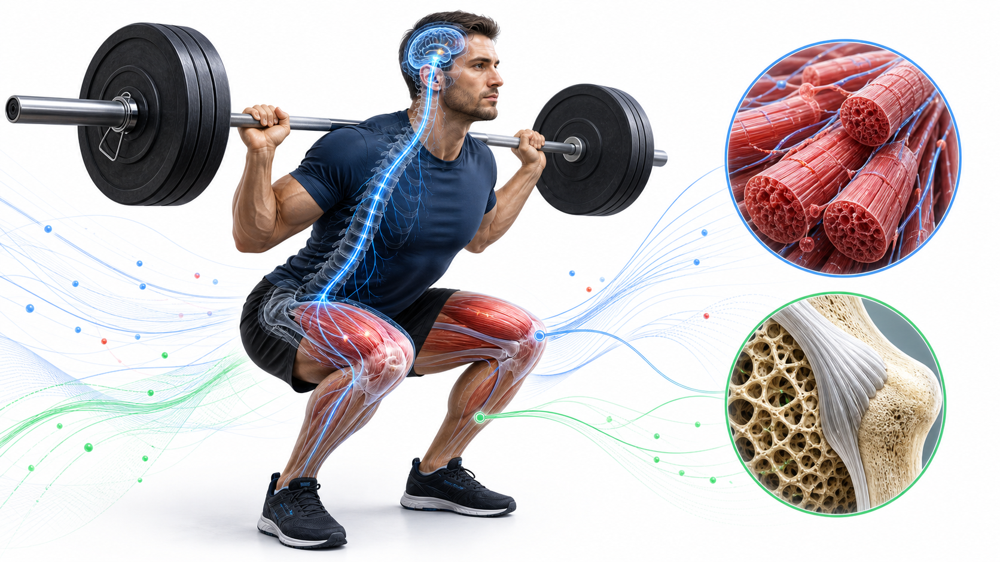
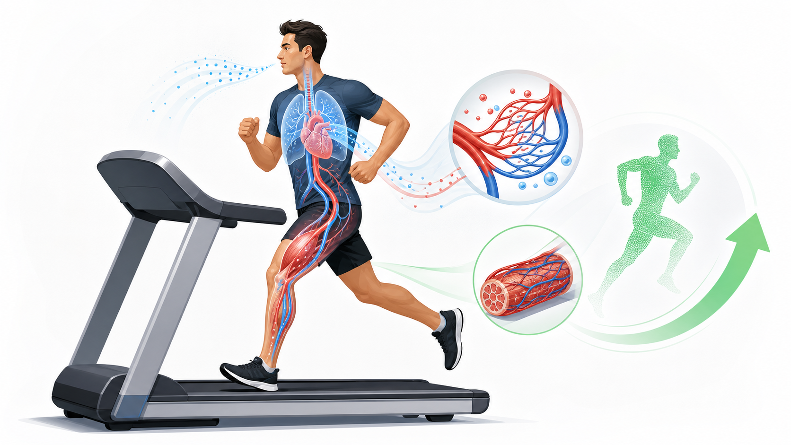

力量增长不等于只长肌肉：新手早期多来自募集、同步化与放电频率等神经适应；长期才逐步表现为肌肥大、骨重塑和结缔组织适应。机械张力是增肌主线，而恢复决定训练刺激能否沉淀成适应。
健身学习 · 中午复习
Day 35｜抗阻训练的生理适应
先分清力量为何先涨，再把适应、负荷与恢复连成一条判断链。
今日新知识速复盘

Day 35 · 返回完整学习页
抗阻训练的生理适应
神经先会用，肌肉再变粗；骨靠承重塑，肌腱慢慢筑；张力是主线，恢复才进步。
艾宾浩斯复习区

1 天前 · Day 34
心肺急性反应与训练适应
一次运动是即时调度：心率、每搏量、心输出量上升；长期训练则让静息心率下降、每搏量与供氧能力提高。
一次运动心跳快，长期训练心更省；Fick 两头记，泵血乘取氧。

3 天前 · Day 32
心血管与呼吸系统解剖
氧气从肺泡装车，由血液配送；心脏四腔分流加压，膈肌和肋间肌驱动通气。
右心去肺，左心去身；动脉承压，静脉回心。

7 天前 · Day 28
能量系统与神经肌肉
三套系统始终协作；神经信号经兴奋-收缩耦联让钙离子启动肌丝，募集决定有多少运动单位参与。
短看磷酸，中看糖；长看氧；电到管，钙开门，小到大加人。

14 天前 · Day 21
第 3 周复盘：生物力学
用力、力矩、杠杆和动作模式解释训练动作；人体多见第三类杠杆，以速度和活动范围交换机械优势。
力乘力臂是力矩；控制动作，先看力线和关节位置。
主动回忆题
1. 新手训练前两周力量上升明显，但围度变化有限，优先想到哪类适应？
神经适应：运动单位募集、放电频率、同步化以及动作协调改善，通常先于明显肌肥大。
2. 增肌相关刺激中最应作为训练设计主线的是什么？为什么酸痛不能单独作为计分板？
机械张力是主线。酸痛反映新奇刺激或恢复成本，不能直接等同于有效增肌；训练量、渐进负荷、营养和恢复共同决定结果。
3. Day 34 中，一次运动与长期耐力训练对静息心率的方向分别如何？
一次运动中心率上升；长期训练常使静息心率下降，同时每搏量提高。
4. 血液循环中，右心和左心分别主要把血送往哪里？
右心把血送往肺循环完成气体交换；左心把富氧血泵入体循环供应全身。
5. 高强度短时运动的 ATP 供能优先依赖什么系统？运动单位通常按什么方向募集？
短时高强度优先依赖 ATP-PCr（磷酸原）系统；运动单位遵循大小原则，通常从小、低阈值单位逐步到大、高阈值单位。
6. 力矩的基本关系是什么？人体最常见的杠杆类型为何仍适合快速、较大幅度的动作？
力矩 = 力 × 力臂。人体多为第三类杠杆，机械优势较小，却能获得更大的末端速度和活动范围。
错因辨析
误区：力量涨得快 = 肌肉立刻长得快
早期常由神经驱动和动作协调提升解释；肌肥大、骨与肌腱适应的时间尺度更长。
早期常由神经驱动和动作协调提升解释；肌肥大、骨与肌腱适应的时间尺度更长。
误区：越酸越有效
酸痛不是训练质量的充分指标。持续表现下降、睡眠受损或关节附近疼痛更值得调整负荷。
酸痛不是训练质量的充分指标。持续表现下降、睡眠受损或关节附近疼痛更值得调整负荷。
误区：一次心率升高说明心肺变差
运动中的心率与心输出量上升是正常急性反应，应和症状、绝对强度及恢复情况一起判断。
运动中的心率与心输出量上升是正常急性反应，应和症状、绝对强度及恢复情况一起判断。